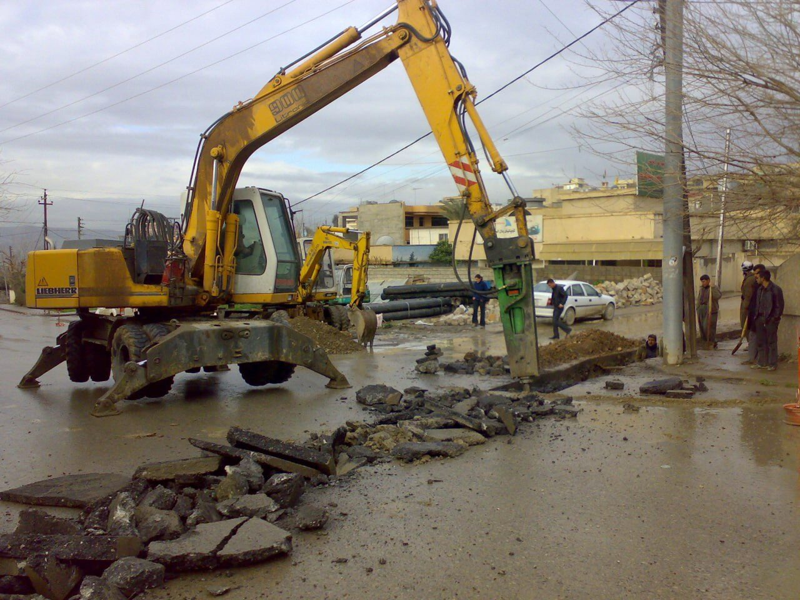
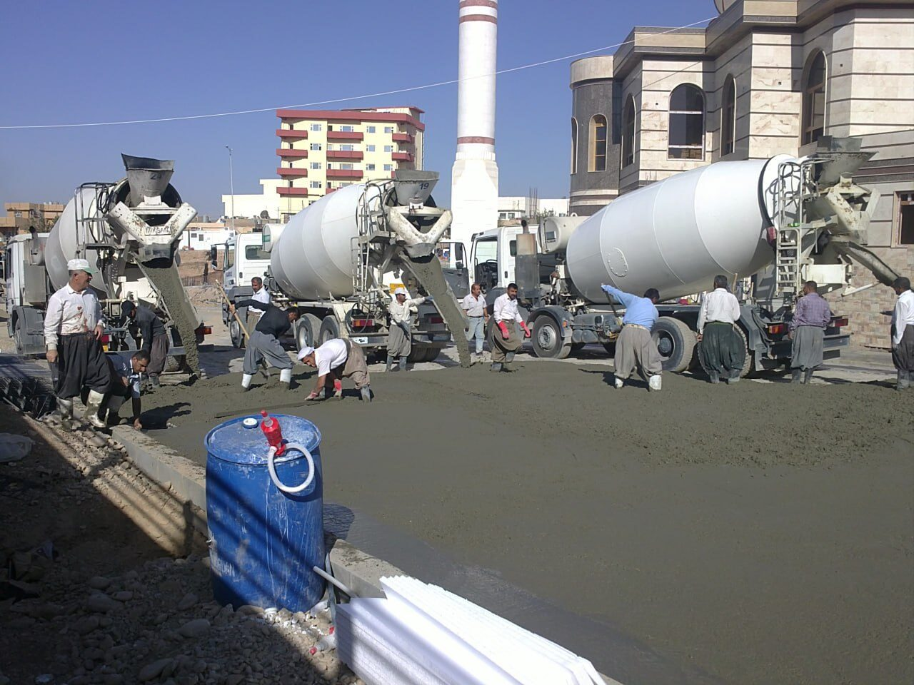
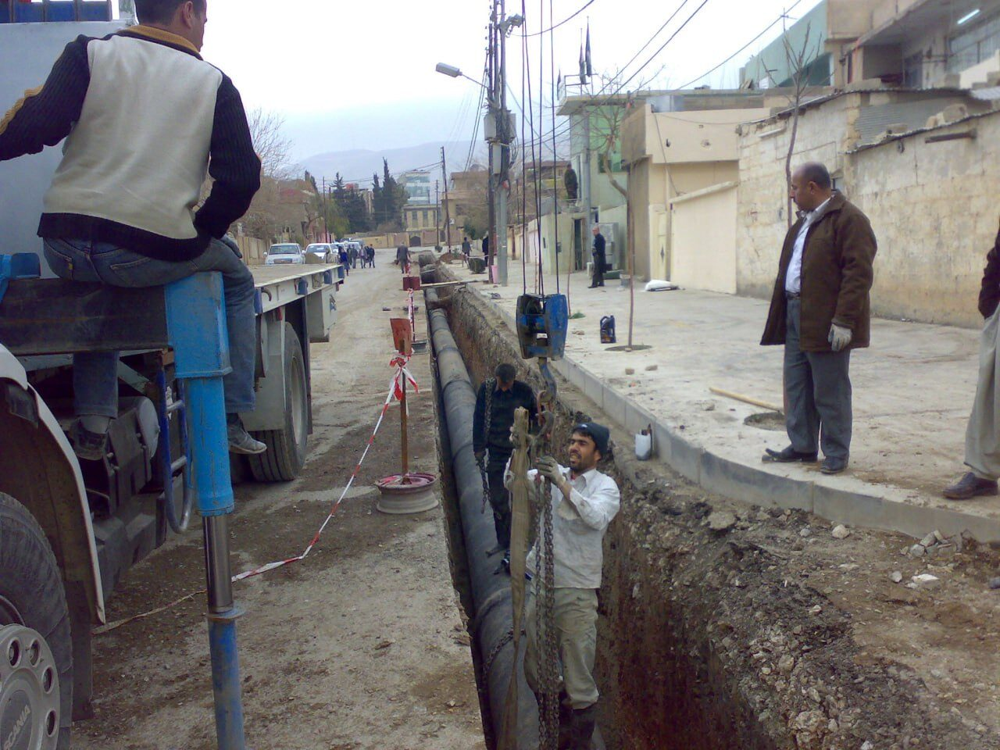

Ellin Company for General Contracting & Trading Ltd. — a Grade (1) Iraqi contractor headquartered in Sulaymaniyah.
Ellin Company is a growing and versatile firm specializing in general contracting and trading, founded in Sulaymaniyah and entirely owned by Iraqi citizens.
The founders and key personnel of the company are highly qualified engineers of different backgrounds who have worked on various large government and private projects. The company's capabilities are best demonstrated by the background of its technical and managerial staff, and by its professional approach and well-established methodologies.
The company offers engineering expertise across technical, design, and management aspects, as well as execution — ensuring well-engineered connections to international markets and the procurement of high-quality, cost-effective products. Ellin has experience in engineering and construction, investment, cooling and heating systems, pipelines, green roofs, and landscaping.


Ellin Company is established, beginning with infrastructure and utility projects across the region.
The company gradually diversifies into healthcare construction, water transmission systems, sewerage networks, and public space development.
Ellin implements major projects for municipalities, public institutions, and private sector clients, strengthening its position within Iraq's contracting sector.
Ellin is recognized as a reliable contractor known for engineering competence, structured execution, and long-term sustainability.
Ellin Company strives to be a leader in the construction industry by delivering exceptional workmanship and outstanding customer service. We are committed to upholding the highest standards of professionalism, honesty, and fairness in all our relationships — with customers, employees, and vendors.
To ensure quality assurance, our team strictly adheres to the general specifications of Iraqi contracts, UN contracts, NGO contracts, and FIDIC standards, aligning with the specific requirements of each project. Through this commitment, we aim to build a lasting reputation for reliability, integrity, and superior craftsmanship.
Our mission is to deliver high-quality, efficient, and safe construction solutions that drive progress and innovation in Iraq's contracting industry — managed entirely by the local workforce and utilizing high-quality, internationally recognized products.
Safety remains our top priority at every stage of the contracting process. Ellin Company provides comprehensive construction management, supervision, labor, materials, equipment, transportation, and all necessary resources to ensure successful project completion.

Every project is managed through a structured, disciplined methodology designed to ensure quality, efficiency, and reliability.
Combines rigorous analysis, creative problem-solving, and collaborative teamwork.
Begins with a deep understanding of clients' needs, followed by meticulous planning and precision execution.
Continuously integrates the latest technologies and industry best practices.
Stringent quality control and adherence to industry standards ensure reliability and durability.
Minimizes environmental impact through eco-friendly designs and sustainable practices.
Delivers engineering excellence while contributing positively to society and the environment.
Corporate Social Responsibility is an integral part of Ellin Company's operations. We are committed to environmental sustainability, community development, and workforce growth — integrating responsible construction practices and ethical business conduct into everything we build.
Explore our services or get in touch to discuss your next project.